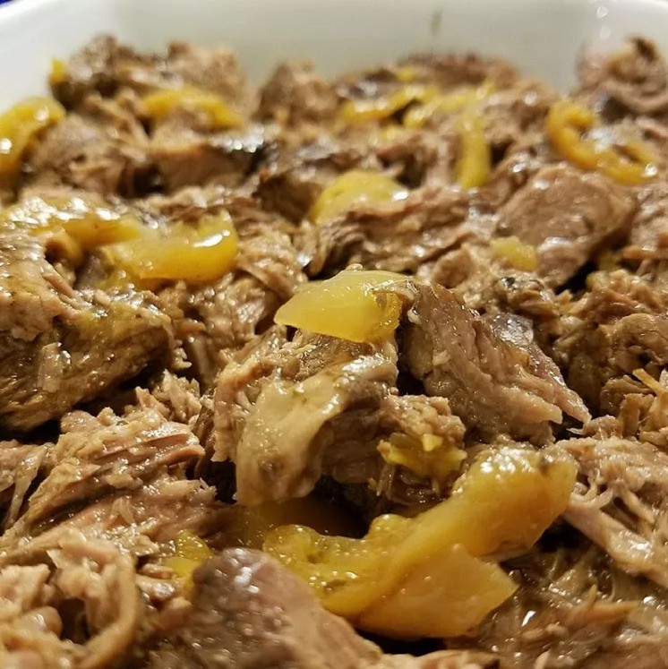

Mississpi Pot Roast

Description
This recipe is dead simple to make and it tastes delicious. What's not to love?
Ingredients
- 3 lb chuck roast
- 10 pepperoncinis (plus some of the juice from the jar)
- 1/2 cup unsalted butter
- 1 packet au jus gravy mix
- 1 package buttermilk ranch dressing mix
Steps
- Combine all the ingredients in a slow cooker and cook on low for 8 hours.
- Remove the meat from the slow cooker, shred, return to the slow cooker. Serve by spooning meat and juices together.